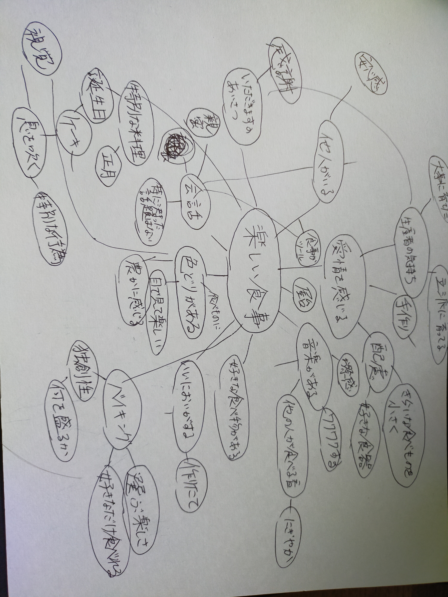

3dプリンターを使ってPLA樹脂などではなく食材（わかりやすいものでいえばチョコ）を用いて
食品を作ることである。データさえさればどこでも作れるので同じ品質のものをどこでも作れる。
しかしただ単に例えばチョコを造形しても意味がない。チョコを意図した形に作りたいのであれば型を作ってそこに流し込めばいいからだ。
造形するというよりはインターネット上のデータを活用したり個々人に適応できることがこの良さであるはずだ。
現在の飲食環境を取り巻く問題を把握することだ。ざっと挙げるだけでも
食糧不足、偏食、食糧自給率の低さ、食品の安全性の不透明さ、孤食、食品ロスなどがある。
まず孤食問題について考えたいと思う。両親が共働きであることによって子供が食事を一人でとること。
それにより栄養バランスが偏るだけでなくコミュニケーション不足によって精神的にもマイナスな影響を与えることだ。まず楽しい食事とは何なのかを理解するためにマインドマップを使って確認したいと思う。

この様になった。これをやってみての感想としては楽しい食事というのは味覚だけでなくそのほかの感覚からとれる刺激も同様に重要だと思った。最もわかりやすい例としてはバースデイケーキのろうそくを息を吹きかけて消す行動などだと思う。（そういう伝統があるからという理由もある）